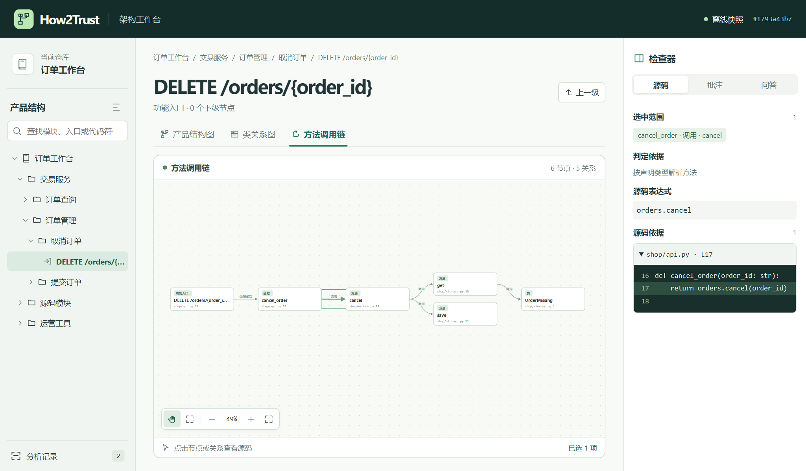
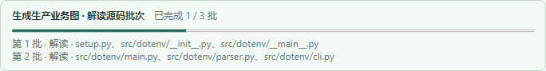

从源码仓库生成架构图
在 Windows 上，把要分析的 Python 项目文件夹拖到 How2Trust.cmd 上。浏览器会打开按源码生成的架构图。想从业务角度理解仓库，可以接入自己的模型生成讲解，再沿引用查看实现。点击右上角「导出 HTML」即可保存当前图。
选对目录，生成自己的图
- 打开工具目录。将 How2Trust 整个文件夹放在本机，找到里面的
How2Trust.cmd和how2trust子目录。运行工具需要 Python 3.10 或更高版本。 - 找到要分析的仓库根目录。例如源码在
D:\项目\订单系统\src\orders，项目配置及src都位于D:\项目\订单系统，就选「订单系统」这个文件夹。若手头是 GitHub 地址，先把仓库克隆到本地，或下载 ZIP 并解压到能看到项目源码的那一层。生成图只需源码，不需要 Git 历史，也无需先启动项目或安装项目的依赖。 - 把仓库文件夹拖到启动器图标上。松开鼠标后保留弹出的命令行窗口。看到浏览器左侧的「产品结构」和中间的「产品结构图」，就可以开始浏览。直接双击启动器会打开 How2Trust 自身源码的工作台。
- 保存图。点击工作台右上角「导出 HTML」，在浏览器的下载位置找到
how2trust.html。文件可改名，双击后仍可展开模块、查看关系和源码。用完本地工作台后可回到命令行窗口按 Ctrl + C 停止服务。
想先看成品，可直接打开订单示例的交互架构图。
用命令直接导出 HTML
在资源管理器中打开 How2Trust 工具目录，点击地址栏，输入 powershell 并回车。下面四行会为 How2Trust 自身的源码生成架构图。
$repo = '.\how2trust'
$out = Join-Path $env:USERPROFILE 'How2Trust输出\How2Trust架构图.html'
.\How2Trust.cmd export "$repo" -o "$out"
Invoke-Item "$out"换成自己的项目时，将第一行改为 $repo = 'D:\项目\订单系统'，第二行可改文件名。工具会创建输出目录，并在终端打印 HTML 的完整路径。每个项目用不同文件名，便于保留多份图。
如果想先在工作台里浏览，在同一个 PowerShell 窗口执行 .\How2Trust.cmd serve "$repo" --port 0 --open。--port 0 会自动选择空闲端口。
使用 macOS 或 Linux 时，在 How2Trust 工具目录中运行下面任一条。分析自己的项目时，将 ./how2trust 换成本地仓库路径。
python3 -m how2trust serve "./how2trust" --port 0 --open
python3 -m how2trust export "./how2trust" -o "$HOME/How2Trust输出/How2Trust架构图.html"导出的 HTML 内含已索引的源码和相关文本，接收者可以打开查看。源码改动后，请重新导出；如果使用本地工作台，则重新启动服务来读取新版源码。
从产品模块找到具体代码
用订单示例走一遍，即可学会在自己的图里核对一条调用关系。
- 在左侧依次点「交易服务」→「订单管理」→「取消订单」→
DELETE /orders/{order_id}。中间切换到该入口的调用图。 - 在「方法调用链」中点击
cancel_order连向OrderService.cancel的线。右侧「源码」会显示shop/api.py第 17 行的return orders.cancel(order_id)。再点目标方法节点，可查看shop/orders.py第 11 行的方法定义。 - 当前调用图超过 12 个节点时，点「展开完整调用图」查看后续各层。小图直接显示完整范围。方法调用自身会画一条「递归调用」回环，点它可以打开调用行。可在 Cookiecutter 第 143 行试一下。
- 切换到「类关系图」，查看相关类和继承关系。示例中的
OrderStore继承自MemoryStore。点顶部「上一级」可返回父模块。

在大图里查找方法时，在左侧「查找模块、入口或代码符号」中输入函数名、类名.方法名 或 文件.py::类名.方法名，选择结果即可定位节点并打开定义。较大的调用图先显示直接相关的节点，点击「展开完整调用图」可看更多层，再点「仅看直接调用」即可收回。
想用自己的业务名称分组
第一次可以直接生成。工具从可识别的路由、命令行和脚本声明提取入口，也会按真实目录列出「源码模块」。如果团队把一组入口称为“订单管理”，可在被分析仓库根目录创建 UTF-8 编码的 how2trust.ini，写明名称和对应源码。
[project]
name = 订单工作台
[group:交易服务/订单管理/取消订单]
entries = shop/api.py::cancel_order/ 划分业务层级。entries 等号右侧填写仓库相对路径和已识别入口的处理函数名。若希望直接把普通源码文件归入一组，可以写 files = shop/storage.py。替换为自己仓库的真实路径和名称后，重新生成图，点击业务分组即可核对配置依据。
用业务词读图
在本地工作台右上角点「模型设置」，选择业务解读、图上问答或两者共用，填写 API 基础地址和模型名。已有 DeepSeek 密钥环境变量时选「使用本机环境变量」，填写 DEEPSEEK_API_KEY，然后点「保存并应用」。也可粘贴仅在本次服务有效的 API Key，或为免鉴权的本地模型选择「无需密钥」。需要用命令行指定配置时，可按供应商配置说明准备 providers.json。
.\How2Trust.cmd serve "D:\项目\订单系统" --llm-config providers.json --open打开后切到「生产业务」，点击「一键生成业务图」。工作台从整仓中选出生产源码，结合入口关系、分组依据和仓库根 README 里的术语生成讲解。在总览或模块说明里点文件与行号可查看原文。
只想了解一个流程时，直接从静态图搜索一个方法、选择模块或圈选多个节点，再点画布下方的「生成选区业务图」。默认读取选区内的实现，勾选「含直接调用」可补入直接调用方、被调方或入口绑定的证据。选择整个文件时，该文件的实现也属于选区。过大时工作台会提示缩小范围。
局部图中点分组可看成员和讲解出处，点箭头可核对实际调用。点「导出选区 HTML」保存这张图和本次解读使用的源码行段；在完整工作台可以从「已生成的选区业务图」切换，或返回原图继续选择。
画布上方会显示进度。解读源码时，进度条按已完成的批次推进，列表显示正在解读或复核的批次和文件。全部批次完成后，留意「归并业务分组」「对照源码复核总览」等阶段，直到图出现在画布上。在同一服务里刷新页面可以接着看进度。

失败后，面板会保留出错阶段、原因和相关批次。遇到鉴权错误，可从面板打开「模型设置」核对密钥，保存后点击「重试生成」。同一份源码和模型配置能复用已校验、已缓存的批次。
改过代码后，用同一路径重新打开仓库，再点「一键生成业务图」。工作台会重建静态调用关系，并逐步检查上次解读的输入。源码片段、调用条件及证据位置相同的步骤可直接复用。例如，入口改变了何时调用发货函数，即使发货函数本身没有改动，涉及触发时机的讲解也要重新核对。进度条会显示完整复用的批次数。
图太小时，点图标题右侧的「全屏查看」。用滚轮缩放，拖动空白处平移，或点「适应画布」看整张图。按 Esc 或点「退出全屏」返回。离线 HTML 也可以全屏阅读。
切到「模块协作」，选一个模块和「它调用谁」或「谁调用它」。点击模块间的箭头，在检查器里查看每一次调用、对应分支和源码。全屏时点「检查器」可收起面板，继续读图。
检查器在图右侧时，向左拖动它边缘的分隔条可加宽阅读区，向右拖动可缩窄。也可以用 Tab 选中分隔条，再按左右方向键微调。双击分隔条或按回车恢复默认宽度。
- 保留默认的手形工具「拖动画布」，单击画布上的模块卡片进入内部关系图。单击代码成员可查看声明，单击内部连线可查看这条关系所在的源码行。
- 例如在 Cookiecutter 协作图中点“项目生成编排”，再点从
cookiecutter指向generate_files的箭头，可看到cookiecutter/main.py第 182 行。也可切换到「类关系图」或「方法调用链」，按关系类型查看当前模块，再点「返回模块详情」回到内部图。 - 在内部图点「返回模块协作」，可以回到下钻前的模块、方向和关系页。需要做批注或问答时，切到矩形圈选工具，单击或拖动只改变选区。要再次下钻，切回手形工具。
切到「整仓结构」可以找回测试夹具。点击「导出 HTML」即可把三个视图保存在同一个离线文件里。
在「生产业务」画布标题旁打开「首页图层」。同时有入口分组和无显式入口的分组时，可以选择「全部业务分组」「入口业务能力」或「内部职责」。库项目缺少显式入口时，所有分组都在「业务能力」中。「源码与配置」可直接查看生产目录、入口及配置分组。切换图层无需请求模型，从分组详情切换也会回到对应的首页。旧 HTML 内嵌的是当时的界面，可在新版工作台重新导出。
打开多仓订单履约示例。在首页「多个入口共用的实现」中展开 Desk.retry，分别查看补货、取消和退货在哪一行重试等待订单。点击退货路径的调用行可看到它受品相条件约束。在本地服务中，选中业务分组或入口即可连续追问。
常见问题
- 拖入后浏览器没有打开，或者显示了其他仓库
- 在工具目录打开 PowerShell，执行
.\How2Trust.cmd serve "D:\项目\订单系统" --port 0 --open，把引号内改为自己的仓库。若终端已打印http://127.0.0.1:…，复制完整地址到浏览器。若提示找不到 Python，确认py -3 --version或python --version能显示 3.10 或更高版本。 - 只看到「源码模块」，没有预想中的业务名
- 先从「源码模块」展开到文件。接入模型后，点「生成业务解读」查看模型根据源码归纳的职责。团队已有固定业务分类时，也可用
how2trust.ini指定分组。配置后仍找不到入口，可打开「分析记录」查看未匹配的选择器。 - 某个方法确实运行过，为什么没有调用线？
- 在「方法调用链」中选中函数或方法。检查器的「已记录的直接调用点」列出仓内、内置、标准库、外部依赖和未解析的调用次数。点分类可核对调用表达式和源码行号。画布上点「显示仓外调用」可展开所选方法用到的库，点箭头查看调用处。旧 HTML 保留生成时的数据，需要从源码重新导出才能看到新版分类。
- 生成图时，工作台会用内置 PyCG 补查回调和间接调用。点带有“PyCG 静态推断（仓内唯一候选）”的调用箭头，可以同时核对调用行和目标定义。Python 3.10、3.11 也能直接使用。存在多个候选或依赖运行时注册时，打开「分析记录」查看未解析的位置。